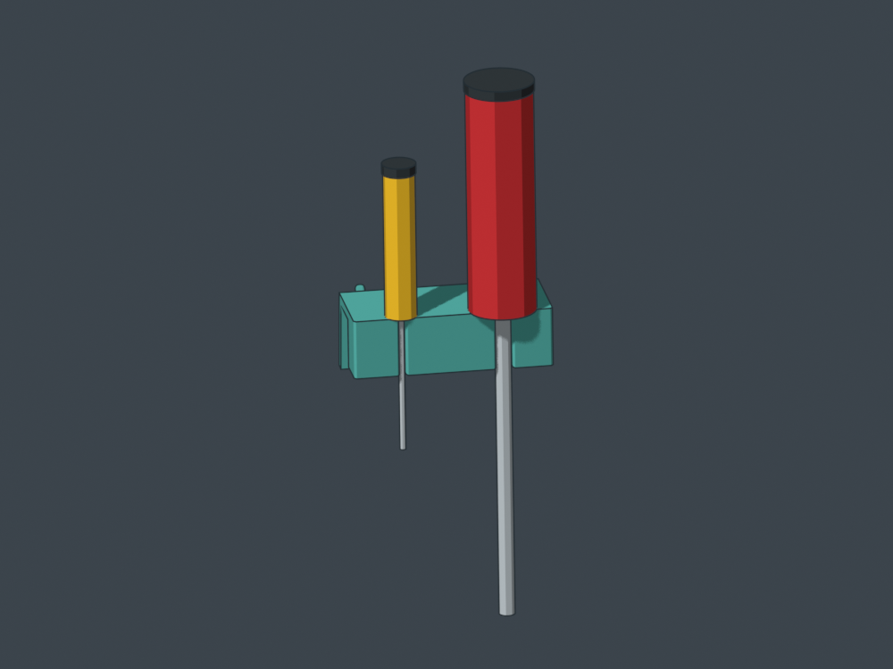
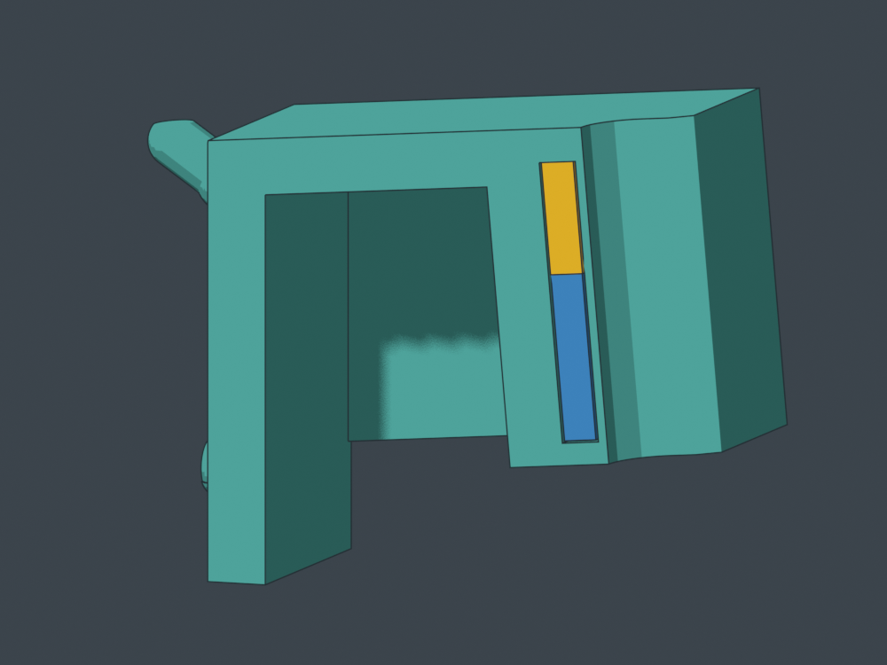
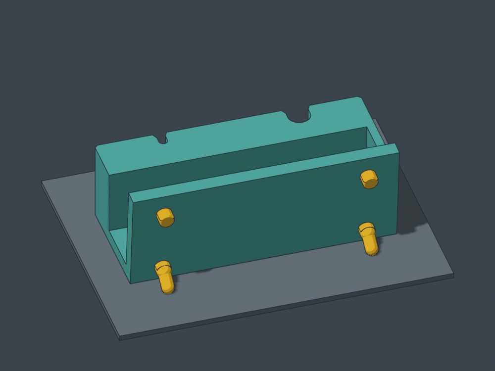
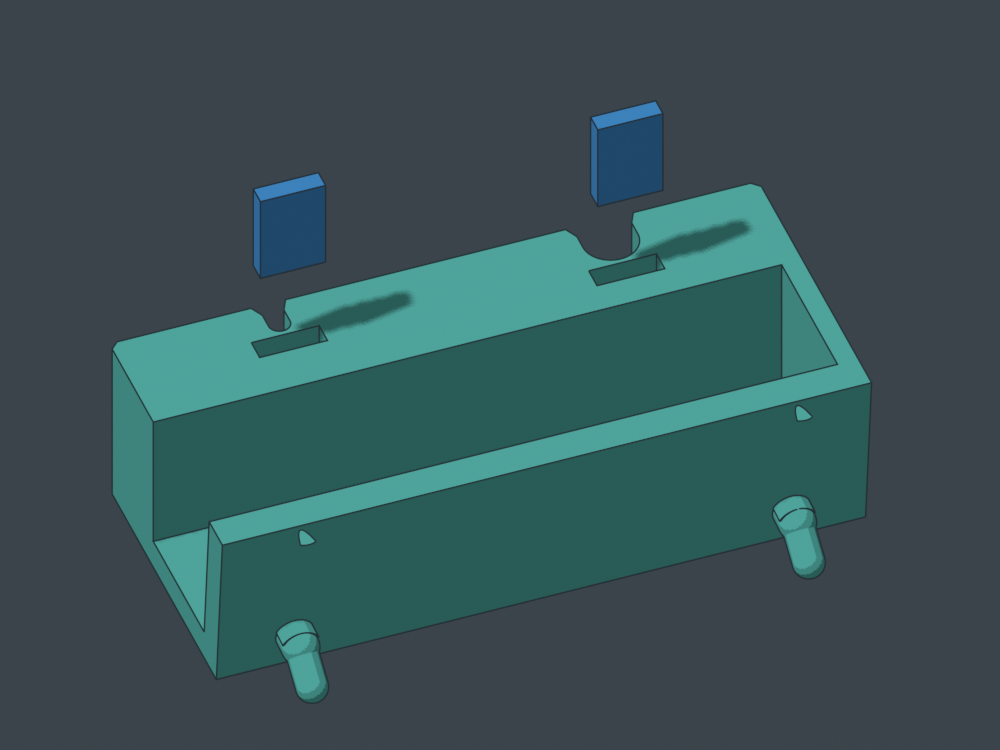
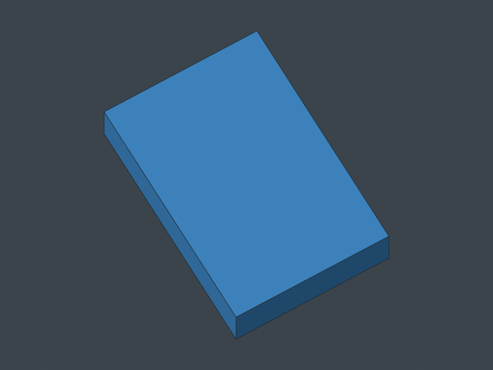
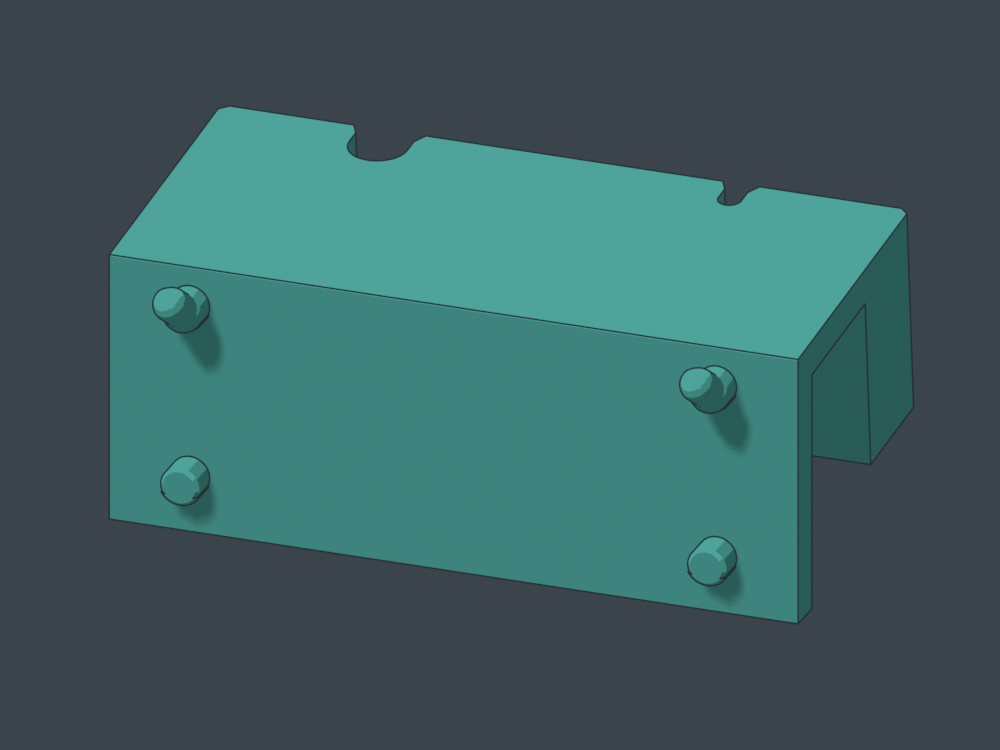

Set down. Lean back. Peel forward.
One two-seat magnetic bar: small and large shafts, a flat bearing shelf, and shallow half-round cradles. 99.6 mm wide across four grid cells; approximately 46.3 mm projection. The top leans 5 degrees toward the board.
Form/function candidate. Nominal 3 mm and 8 mm shaft geometry, withdrawal and magnet loading checked. Magnetic feel and physical fit are untested. Two 10x10x3 mm magnets and two pre-printed plugs are required. Local peg supports are part of the print plan.

Small and large planning tools: nominal 3 mm and 8 mm shafts. Handles illustrate grasp room, not a required shape. Two open half-round cradles. Root or collar bears on the flat top; shafts withdraw directly forward.
Two open half-round cradles. Root or collar bears on the flat top; shafts withdraw directly forward.
True CAD section: yellow is the 10x10x3 mm magnet; blue is the long plastic plug. Magnet face sits about 1 mm behind the seated shaft.
Print the flat top on the bed. Yellow highlights rear peg regions requiring local support review.
Exploded loading view at geometric height 28 mm: magnet first, plug second, then close the pocket. Slicer pause not yet verified.
Print two identical plugs first, lying on this broad face. Each is 10x2.95x14.8 mm.
Two mounting columns with current tighter canonical pegs. The receiving back sits flush on the board.CAD downloads
Rotate empty holder
Rotate with planning tools
Rotate print pose
Magnet loading
Print both plugs first. With the holder upside down, pause before the two chimneys close at geometric print height 28 mm. Insert each magnet and its long plug, then resume to seal. The exact layer and nozzle clearance must be checked in the slicer before printing; no G-code is supplied.
The 30 mm bearing length guides each shaft. Nominal magnet-face gap is 1.02 mm through the skin and pocket clearance. The magnet supplies attraction; the groove has no plastic snap undercut. A third medium seat and a hex seat are future variants, not part of this test.